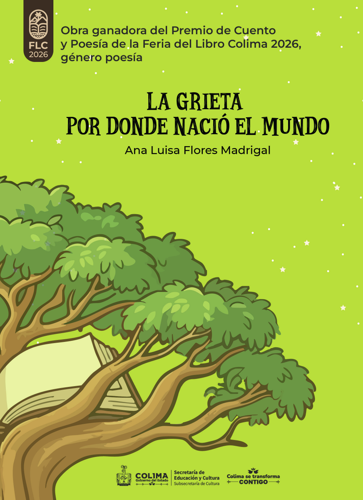

Poesía · Primer lugar
La grieta por donde nació el mundo
Un poemario que indaga en el origen primordial: el momento en que lo unido se separa, la montaña escucha su propio rumor y nace la herida por donde aparece el mundo. Una poética de la tierra, el fuego, el agua y la memoria del territorio.